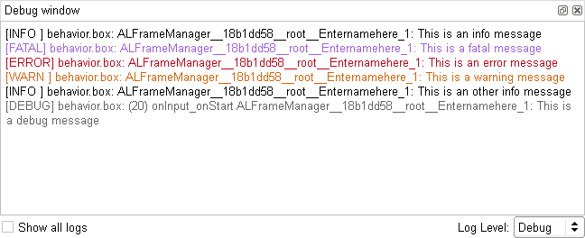

Scripting Python boxes¶
Python¶
This script is in Python.
As in any usual Python script, you can import any Python module and use any Python function. To know how to do so, see the section: How to import python module in a script box.
For further details about Python, see the official website: http://www.python.org.
Default script¶
By default, when you create a box its script looks as follows:
class MyClass(GeneratedClass):
def __init__(self):
GeneratedClass.__init__(self)
def onLoad(self):
#~ puts code for box initialization here
pass
def onUnload(self):
#~ puts code for box cleanup here
pass
def onInput_onStart(self):
#~ self.onStopped() #~ activate output of the box
pass
def onInput_onStop(self):
self.onUnload() #~ it is recommended to call onUnload of this box in a onStop method, as the code written in onUnload is used to stop the box as well
pass
MyClass automatic generation¶
You can see above that a box script defines a class named MyClass.
This class inherits from GeneratedClass.
And MyClass has already some methods defined by default.
In fact MyClass is the class representing the box.
GeneratedClass is a class which is automatically generated at the execution of the behavior.
It includes all the needed information concerning the box (inputs, outputs, parameters, etc).
It also defines all the additional built-in functions of the box script which could be useful for you to use in the script.
The fact that MyClass inherits from GeneratedClass makes possible for you to use all these built-in functions in the script.
Moreover, as you can edit MyClass, you can add your own functions.
Built-in functions in the script of a box¶
In the script of a box, there are many available methods, allowing you to manage:
- Inputs,
- Output,
- Parameters,
- Timeline,
- Load and unload events,
- Resources,
- Proxies,
- File system,
- Logs.
- Exception handling.
Inputs¶
Methods corresponding to the inputs of the box
need to be defined in the script with the following syntax: onInput_<input-name>.
This method is called each time an input is stimulated.
For example, if an input is named myInput and is a Bang, the following lines are to define its corresponding method:
def onInput_myInput(self):
# The code of my method
pass
If myInput is a Number, the following lines are to define its corresponding method:
def onInput_myInput(self, number):
# The code of my method
pass
The argument number is the value of the signal sent on the input.
If myInput is a Dynamic and it can be stimulated with a Number or just a Bang, you can use the following lines:
def onInput_myInput(self, number = None):
# The code of my method
pass
The argument number is:
- the value of the signal sent on the input or
- is equal to
Noneif it is stimulated with aBang.
Output¶
Methods corresponding to the outputs of the box
are not present in the script but are already defined with the following syntax: <output-name>.
The output is stimulated each time a method corresponding to an output is called.
For example, if an output is named myOutput and is a Bang, the following line enables you to stimulate the output:
self.myOutput()
If myOutput is a Number, the following lines enables you to stimulate the output with the value of myNumber:
myNumber = 3
self.myOutput(myNumber)
If your output is named onError, it will automatically be triggered if an
exception is raised and uncaught by your Python script, with a String value
carried over. See Exception handling.
Parameters¶
Get parameter function allows you to get the value of any parameter of the box.
For example, if the box has a parameter named My parameter, the command to get the value of this parameter will be:
value = self.getParameter("My parameter")
This function will throw an exception if no such parameter exists.
setParameter callback can be overloaded. It will be called when the parameter changes.
For example, if the box has a parameter named My parameter, this script will have a callback on the parameter change:
def setParameter(self, parameterName, newValue):
if(parameterName == "My parameter"):
self.logger.info("My parameter has been changed to " + str(newValue))
Timeline¶
These methods allows you to affect the Timeline of the box from its script or from the script of an inner box.
To access to a Timeline object in python, use:
self.getTimeline()to manage the Timeline of the current box, orself.getParentTimeline()to manage the Timeline of the parent box.
Function on Timeline objects:
| Function | Description |
|---|---|
| play() | Reads a Timeline from the current buffer till the end. |
| pause() | Pauses the reading of a Timeline at the current frame. |
| stop() | Stops reading a Timeline. |
| goTo(int) | Moves the Time cursor |
| goTo(char*) | to a frame. The targeted frame can be specified:
|
| getSize() | Gets the Size of the Timeline. For further details, see: Timeline properties. |
| getFPS() | Gets the FPS of the Timeline. For further details, see: Timeline properties. |
| setFPS(int) | Sets the FPS of the Timeline. For further details, see: Timeline properties. |
Load and unload events¶
Methods automatically called when the box is loaded or unloaded.
onLoad is called when the box is loaded.
It is defined as follows:
def onLoad(self):
# The code of my method
pass
onUnload is called when it is unloaded.
It is defined as follows:
def onUnload(self):
# The code of my method
pass
It is advised to call onUnload in the code of the methods corresponding to the onStop inputs so that the box is reinitialized when it is stopped.
Resources¶
onResourceis called when the resources of the box are set to Callback on demand and the resources are asked by another box.You need to define this function for it to be called. The following lines enable you to define it:
def onResource(self, resource): # The code of my method pass
The argument
resourcecorresponds to the name of the resource asked.onResourceErroris called if the resources are not available when you start the box.You need to define this function for it to be called. The following lines enable you to define it:
def onResourceError(self): # The code of my method pass
onResourceLostis called when the resources of the box are set to Stop on demand and if the resources are asked by another box.You need to define this function for it to be called. The following lines enable you to define it:
def onResourceLost(self): # The code of my method pass
Proxies¶
ALProxy enables you to create a proxy on a NAOqi module and then use
easily any method of this module.
For example, if you want to create a proxy on ALLeds and use the rasta
method, then you can use the following lines in your function:
leds = ALProxy("ALLeds")
leds.rasta()
File system¶
You may need to know the location of your behavior, on the file system.
For example, if you want to run the behavior do_something of your application, you have to know the package UID representing your application:
alBehaviorManager = ALProxy("ALBehaviorManager")
alBehaviorManager.runBehavior(self.packageUid() + '/do_something')
For example, to access to a hello.wav file, located in the behavior’s folder, use:
path = os.path.join(self.behaviorAbsolutePath(), 'hello.wav')
To access to a resource of your application, get the path where your application is installed. You can do this by removing the relative behavior path from the previous seen behavior absolute path.
application_path = self.behaviorAbsolutePath().replace(self.behaviorRelativePath(), "")
Logs¶
These methods enables you to print messages in the Log viewer.
Indeed you may have noticed that you cannot print anything in the Debug window using the classic print statement in a box script.
To do so, you need to use specific commands detailed below instead:
| Function | Description |
|---|---|
self.log("my message") |
Message with an info level of severity. |
self.logger.fatal("my message") |
Message with a fatal level of severity. |
self.logger.error("my message") |
Message with an error level of severity. |
self.logger.warning("my message") |
Message with a warning level of severity. |
self.logger.info("my message") |
Message with an info level of severity. |
self.logger.debug("my message") |
Message with a debug level of severity. |
For example, something like:
def onInput_onStart(self):
self.log("This is an info message")
self.logger.fatal("This is a fatal message")
self.logger.error("This is an error message")
self.logger.warning("This is a warning message")
self.logger.info("This is an other info message")
self.logger.debug("This is a debug message")
displays in the Debug window:
Exception handling¶
Exceptions may be thrown by various pieces of script, for example when creating proxies to absent modules.
If an exception is not caught by your Python code, the error will propagate to the top of your behavior so that it will be stopped.
To prevent the behavior from stopping, you must either catch the exceptions in your Python code directly or add an onError output.
To do so, create an output named onError, with the onStopped nature and
with the String type. Whenever an exception is raised and uncaught, the
onError output will be triggered with the message of the exception carried
over.
How to import python module in a script box¶
If you want to do special treatments on data you will need to import some python modules such as math or string.
This is done by the import instruction on top of the script code.
Here is a code sample that shows how to import math module:
class MyClass(GeneratedClass):
def __init__(self):
GeneratedClass.__init__(self)
def onLoad(self):
#~ puts code for box initialization here
pass
def onUnload(self):
#~ puts code for box cleanup here
pass
def onInput_onStart(self):
import math #Import the math module
self.tan = math.tan(p)
self.onStopped(self.tan)
pass
def onInput_onStop(self):
self.onUnload() #~ it is recommended to call onUnload of this box in a onStop method, as the code written in onUnload is used to stop the box as well
pass